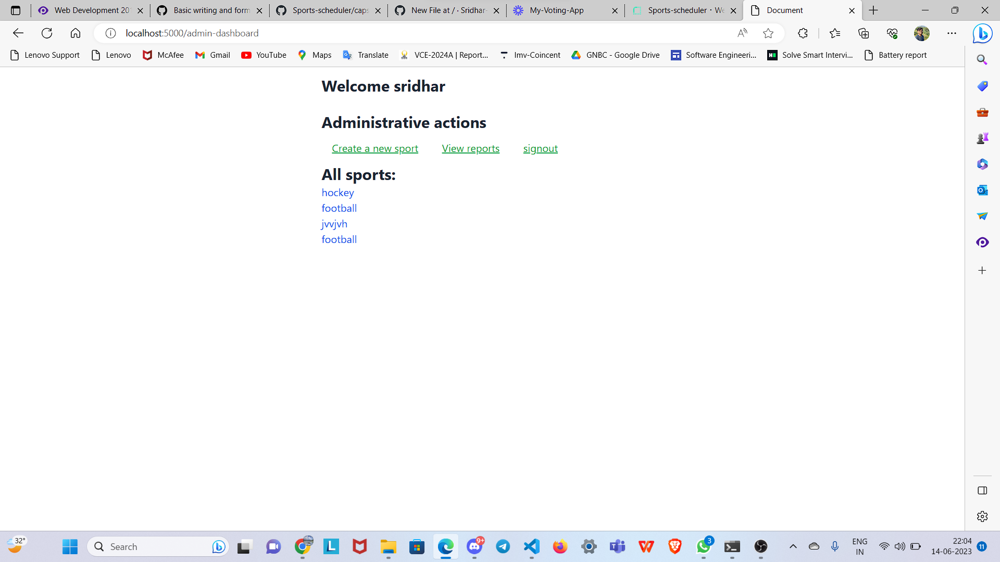
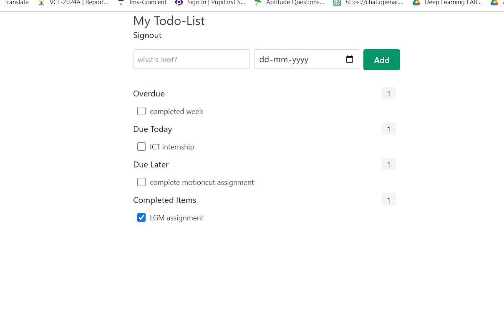

My Project Works

Sports Schedular
It is Web Application. It is user-friendly scheduling platform built using Node.js, designed to simplify the management of sports events. This application offers an intuitive and easy-to-navigate user interface, making it accessible for event organizers, coaches, and participants of all technical backgrounds.
Technologies Used:
- NodeJS
- JavaScript
- CSS
- HTML
- Database(Postgresql)

Todo Application
It is Web Application. It is a versatile web-based tool built using JavaScript, designed to help users organize tasks, manage their time efficiently, and stay on top of their daily responsibilities. This application provides a simple yet powerful platform for creating, tracking, and prioritizing tasks, whether for personal, professional, or academic purposes.
Technologies Used:
- JavaScript
- CSS
- HTML